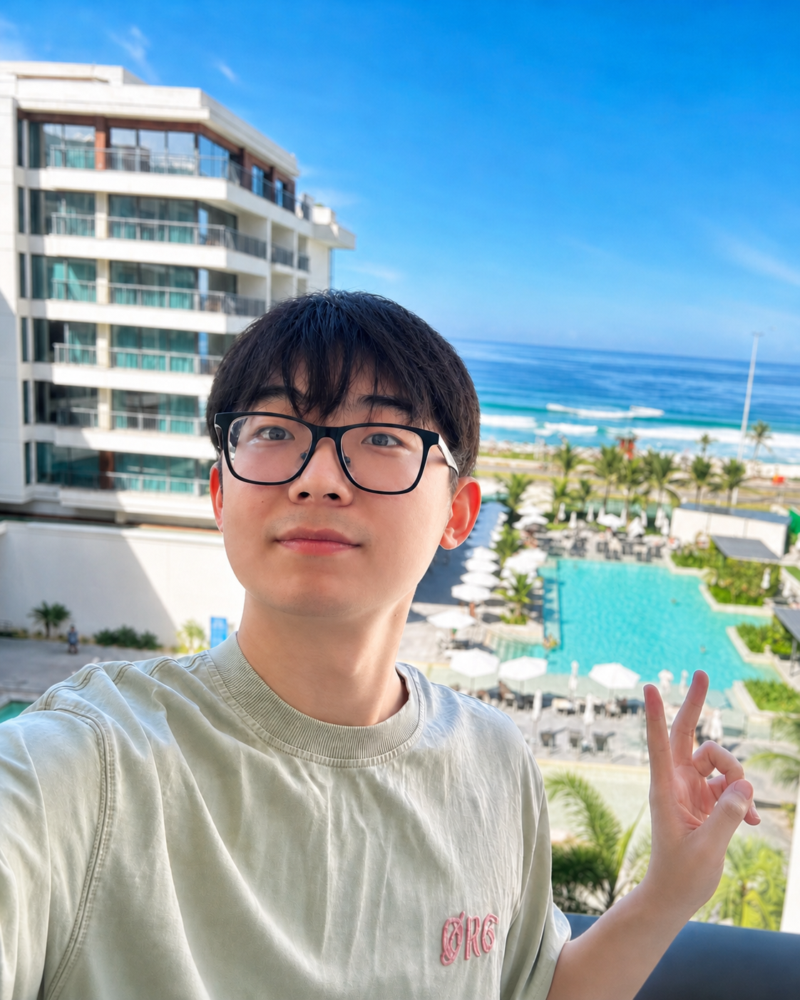
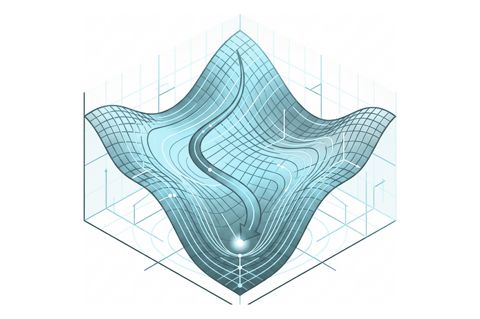
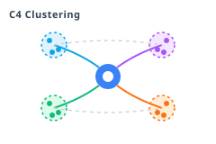
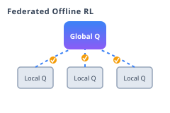
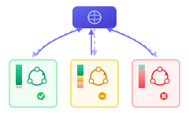
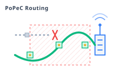

Ph.D. Student in Computer Science
Central South University (Expected graduation: Dec. 2026)
Visiting Ph.D. Student at Tsinghua University, Dept. of CS&T
I am a Ph.D. student in Computer Science at Central South University and currently a visiting researcher at the Institute of Human-Computer Interaction and Media Integration, Tsinghua University. I am fortunate to be advised by Prof. Ju Ren. My research primarily focuses on developing principled algorithms for Offline RL, RL for Pretraining, and Edge Intelligence. Recently, I have been working on collapse-suppressed optimizers and cross-covariance control for offline RL.
Visiting Ph.D. Student, Dept. of Computer Science and Technology
Visiting Ph.D. Student, School of Cyber Science and Technology
Ph.D. in Computer Science and Technology (Expected: Dec. 2026)
B.Eng. in Computer Science
AdamO: A Collapse-Suppressed Optimizer for Offline RL

Less is More: Clustered Cross-Covariance Control for Offline RL

FORLER: Federated Offline Reinforcement Learning with Q-Ensemble and Actor Rectification

FOVA: Offline Federated Reinforcement Learning With Mixed-Quality Data

PoPeC: PAoI-Centric Task Offloading with Priority over Unreliable Channels

Distributed Pricing and Bandwidth Allocation in Crowdsourced Networks
TODG: Distributed Task Offloading with Delay Guarantees for Edge Computing
Served as a reviewer for the following venues: